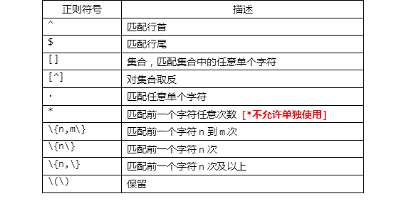
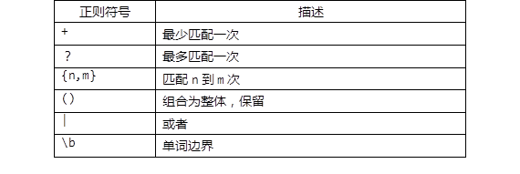

原文
提供更好的翻译建议
本案例要求熟悉正则表达式的编写，完成以下任务：
表-1基本正则列表
表-1扩展正则列表
实现此案例需要按照如下步骤进行。
步骤一：正则表达式匹配练习
1）典型的应用场合：grep的，egrep的检索文本行
grep的命令不带-E选项时，支持基本正则匹配模式。比如“词”关键词检索，“^字”匹配以字开头的行“字$”匹配以字结尾的行......等等。
输出以“R”开头的用户记录：
- [ root @svr5 ~] #grep '^ r' / etc / passwd
- root ： x ：0 ：0 ： root ：/ root：/ bin / bash
- rpc ： x ：32 ：32 ： Portmapper RPC用户：/：/ sbin / nologin
- rpcuser:x:29:29:RPC Service User:/var/lib/nfs:/sbin/nologin
输出以“localhost”结尾的行：
- [root@svr5 ~]# grep 'localhost$' /etc/hosts
- 127.0.0.1 localhost.localdomain localhost
若希望在grep检索式同时组合多个条件，比如输出以“root”或者以“daemon”开头的行：
- [root@svr5 ~]# grep '^root|^daemon' /etc/passwd //搜索无结果
- [root@svr5 ~]#
而若若使用grep -E或egrep命令，可支持扩展正则匹配模式，能够自动识别 |、{} 等扩展正则表达式中的特殊字符，用起来更加方便，比如：
- [root@svr5 ~]# grep -E '^(root|daemon)' /etc/passwd
- root:x:0:0:root:/root:/bin/bash
- daemon:x:2:2:daemon:/sbin:/sbin/nologin
或者
- [root@svr5 ~]# egrep '^(root|daemon)' /etc/passwd
- root:x:0:0:root:/root:/bin/bash
- daemon:x:2:2:daemon:/sbin:/sbin/nologin
使用grep -E 与 使用egrep命令完全等效，推荐使用后者，特别是涉及到复杂的正则表达式的时候。
2）grep、egrep命令的-q选项
选项 -q 表示 quiet（静默）的意思，结合此选项可以只做检索而并不输出，通常在脚本内用来识别查找的目标是否存在，通过返回状态 $? 来判断，这样可以忽略无关的文本信息，简化脚本输出。
比如，检查/etc/hosts文件内是否存在192.168.4.4的映射记录，如果存在则显示“YES”，否则输出“NO”，一般会执行：
- [root@svr5 ~]# grep '^192.168.4.4' /etc/hosts && echo "YES" || echo "NO"
- 192.168.4.4 svr5.tarena.com svr5
- YES
这样grep的输出信息和脚本判断后的提示混杂在一起，用户不易辨别，所以可以改成以下操作：
- [root@svr5 ~]# grep -q '^192.168.4.4' /etc/hosts && echo "YES" || echo "NO"
- YES
是不是清爽多了，从上述结果也可以看到，使用 -q 选项的效果与使用 &> /dev/null的效果类似。
3）基本元字符 ^、$ —— 匹配行首、行尾
输出注释的配置行（以#开头的行）：
- [root@svr5 ~]# egrep '^#' /etc/inittab
统计本地用户中登录Shell为“/sbin/nologin”的用户个数：
提示：-m10仅在文件的前10行中过滤，后面的行不再过滤。
- [root@svr5 ~]# egrep -m10 '/sbin/nologin$' /etc/passwd //先确认匹配正确
- bin:x:1:1:bin:/bin:/sbin/nologin
- daemon:x:2:2:daemon:/sbin:/sbin/nologin
- adm:x:3:4:adm:/var/adm:/sbin/nologin
- lp:x:4:7:lp:/var/spool/lpd:/sbin/nologin
- mail:x:8:12:mail:/var/spool/mail:/sbin/nologin
- uucp:x:10:14:uucp:/var/spool/uucp:/sbin/nologin
- operator:x:11:0:operator:/root:/sbin/nologin
- games:x:12:100:games:/usr/games:/sbin/nologin
- gopher:x:13:30:gopher:/var/gopher:/sbin/nologin
- ftp:x:14:50:FTP User:/var/ftp:/sbin/nologin
- [root@svr5 ~]# egrep -c '/sbin/nologin$' /etc/passwd
- 32 //结合 -c 选项输出匹配的行数
使用 -c 选项可输出匹配行数，这与通过管道再 wc -l的效果是相同的，但是写法更简便。比如，统计使用“/bin/bash”作为登录Shell的正常用户个数，可执行：
- [root@svr5 ~]# egrep -c '/bin/bash$' /etc/passwd
- 26
或者
- [root@svr5 ~]# egrep '/bin/bash$' /etc/passwd | wc -l
- 26
4）基本元字符 . —— 匹配任意单个字符
以/etc/rc.local文件为例，确认文本内容：
- [root@svr5 ~]# cat /etc/rc.local
- #!/bin/sh
- #
- # This script will be executed *after* all the other init scripts.
- # You can put your own initialization stuff in here if you don't
- # want to do the full Sys V style init stuff.
- touch /var/lock/subsys/local
输出/etc/rc.local文件内至少包括一个字符（\n换行符除外）的行，即非空行：
- [root@svr5 ~]# egrep '.' /etc/rc.local
- #!/bin/sh
- #
- # This script will be executed *after* all the other init scripts.
- # You can put your own initialization stuff in here if you don't
- # want to do the full Sys V style init stuff.
- touch /var/lock/subsys/local
输出/etc/rc.local文件内的空行（用 –v 选项将条件取反）：
- [root@svr5 ~]# egrep -v '.' /etc/rc.local
- [root@svr5 ~]#
上述取空行的操作与下列操作效果相同：
- [root@svr5 ~]# egrep '^$' /etc/rc.local
- [root@svr5 ~]#
5）基本元字符 +、?、* —— 目标出现的次数
还以/etc/rc.local文件为例：
- [root@svr5 ~]# cat /etc/rc.local
- #!/bin/sh
- #
- # This script will be executed *after* all the other init scripts.
- # You can put your own initialization stuff in here if you don't
- # want to do the full Sys V style init stuff.
- touch /var/lock/subsys/local
输出包括 f、ff、ff、……的行，即“f”至少出现一次：
- [root@svr5 ~]# egrep 'f+' /etc/rc.local
- # This script will be executed *after* all the other init scripts.
- # You can put your own initialization stuff in here if you don't
- # want to do the full Sys V style init stuff.
输出包括init、initial的行，即末尾的“ial”最多出现一次（可能没有）：
- [root@svr5 ~]# egrep 'init(ial)?' /etc/rc.local
- # This script will be executed *after* all the other init scripts.
- # You can put your own initialization stuff in here if you don't
- # want to do the full Sys V style init stuff.
输出包括stu、stuf、stuff、stufff、……的行，即末尾的“f”可出现任意多次，也可以没有。重复目标只有一个字符时，可以不使用括号：
- [root@svr5 ~]# egrep 'stuf*' /etc/rc.local
- # You can put your own initialization stuff in here if you don't
- # want to do the full Sys V style init stuff.
输出所有行，单独的“.*”可匹配任意行（包括空行）：
- [root@svr5 ~]# egrep '.*' /etc/rc.local
- #!/bin/sh
- #
- # This script will be executed *after* all the other init scripts.
- # You can put your own initialization stuff in here if you don't
- # want to do the full Sys V style init stuff.
- touch /var/lock/subsys/local
输出/etc/passwd文件内“r”开头且以“nologin”结尾的用户记录，即中间可以是任意字符：
- [root@svr5 ~]# egrep '^r.*nologin$' /etc/passwd
- rpc:x:32:32:Portmapper RPC user:/:/sbin/nologin
- rpcuser:x:29:29:RPC Service User:/var/lib/nfs:/sbin/nologin
6）元字符 {} —— 限定出现的次数范围
创建一个练习用的测试文件：
- [root@svr5 ~]# vim brace.txt
- ab def ghi abdr
- dedef abab ghighi
- abcab CD-ROM
- TARENA IT GROUP
- cdcd ababab
- Hello abababab World
输出包括ababab的行，即“ab”连续出现3次：
- [root@svr5 ~]# egrep '(ab){3}' brace.txt
- cdcd ababab
- Hello abababab World
输出包括abab、ababab、abababab的行，即“ab”连续出现2~4次：
- [root@svr5 ~]# egrep '(ab){2,4}' brace.txt
- dedef abab ghighi
- cdcd ababab
- Hello abababab World
输出包括ababab、abababab、……的行，即“ab”最少连续出现3次：
- [root@svr5 ~]# egrep '(ab){3,}' brace.txt
- cdcd ababab
- Hello abababab World
7）元字符 [] —— 匹配范围内的单个字符
还以前面的测试文件bracet.txt为例：
- [root@svr5 ~]# cat brace.txt
- ab def ghi abdr
- dedef abab ghighi
- abcab CD-ROM
- TARENA IT GROUP
- cdcd ababab
- Hello abababab World
输出包括abc、abd的行，即前两个字符为“ab”，第三个字符只要是c、d中的一个就符合条件：
- [root@svr5 ~]# egrep 'ab[cd]' brace.txt
- ab def ghi abdr
- abcab CD-ROM
输出包括大写字母的行，使用[A-Z]匹配连续范围：
- [root@svr5 ~]# egrep '[A-Z]' brace.txt
- abcab CD-ROM
- TARENA IT GROUP
- Hello abababab World
过滤“非小写字母”的其他字符：
- [root@svr5 ~]# egrep '[^a-z]' brace.txt
8）单词边界匹配
以文件/etc/rc.local为例：
- [root@svr5 ~]# cat /etc/rc.local
- #!/bin/sh
- #
- # This script will be executed *after* all the other init scripts.
- # You can put your own initialization stuff in here if you don't
- # want to do the full Sys V style init stuff.
- touch /var/lock/subsys/local
输出包括单词“init”的行，文件中“initialization”不合要求：
- [root@svr5 ~]# egrep '\binit\b' /etc/rc.local
- # This script will be executed *after* all the other init scripts.
- # want to do the full Sys V style init stuff.
或者：
- [root@svr5 ~]# egrep '\<init\>' /etc/rc.local
- # This script will be executed *after* all the other init scripts.
- # want to do the full Sys V style init stuff.
输出包括以“ll”结尾的单词的行，使用 \> 匹配单词右边界：
- [root@svr5 ~]# egrep 'll\>' /etc/rc.local
- # This script will be executed *after* all the other init scripts.
- # want to do the full Sys V style init stuff.
或者：
- [root@svr5 ~]# egrep 'll\b' /etc/rc.local
- # This script will be executed *after* all the other init scripts.
- # want to do the full Sys V style init stuff.
9）多个条件的组合
通过dmesg启动日志查看蓝牙设备、网卡设备相关的信息：
- [root@svr5 ~]# egrep -i 'eth|network|bluetooth' /var/log/dmesg
- Initalizing network drop monitor service
- Bluetooth: Core ver 2.10
- Bluetooth: HCI device and connection manager initialized
- Bluetooth: HCI socket layer initialized
- Bluetooth: HCI USB driver ver 2.9
- Intel(R) PRO/1000 Network Driver - version 7.3.21-k4-3-NAPI
- e1000: eth0: e1000_probe: Intel(R) PRO/1000 Network Connection
本案例要求熟悉sed命令的p、d、s等常见操作，并结合正则表达式，完成以下任务：
sed文本处理工具的用法：
- 用法1：前置命令 | sed [选项] '条件指令'
- 用法2：sed [选项] '条件指令' 文件.. ..
相关说明如下：
实现此案例需要按照如下步骤进行。
步骤一：认识sed工具的基本选项
sed命令的常用选项如下：
-n（屏蔽默认输出，默认sed会输出读取文档的全部内容）
-r（让sed支持扩展正则）
-i（sed直接修改源文件，默认sed只是通过内存临时修改文件，源文件无影响）
1）sed命令的 -n 选项
执行p打印等过滤操作时，希望看到的是符合条件的文本。但不使用任何选项时，默认会将原始文本一并输出，从而干扰过滤效果。比如，尝试用sed输出/etc/hosts的第1行：
- [root@svr5 ~]# sed '1p' /etc/hosts
- 127.0.0.1 localhost localhost.localdomain localhost4 localhost4.localdomain4
- 127.0.0.1 localhost localhost.localdomain localhost4 localhost4.localdomain4
- ::1 localhost localhost.localdomain localhost6 localhost6.localdomain6
可以发现所有的行都被显示出来了（第1行重复2次）。—— 正确的用法应该添加 -n 选项，这样就可以只显示第1行了：
- [root@svr5 ~]# sed -n '1p' /etc/hosts
- 127.0.0.1 localhost localhost.localdomain localhost4 localhost4.localdomain4
行号可以是连续的行号，如打印passwd第3到第6行账户的信息：
- [root@svr5 ~]# sed -n '3,6p' /etc/passwd
- bin:x:1:1:bin:/bin:/sbin/nologin
- daemon:x:2:2:daemon:/sbin:/sbin/nologin
- adm:x:3:4:adm:/var/adm:/sbin/nologin
- lp:x:4:7:lp:/var/spool/lpd:/sbin/nologin
2）sed命令的 -i 选项
正常情况下，sed命令所做的处理只是把操作结果（包括打印、删除等）输出到当前终端屏幕，而并不会对原始文件做任何更改：
- [root@svr5 ~]# sed 'd' /etc/passwd //删除所有行
- [root@svr5 ~]# cat /etc/passwd //查看原始文本，并未改动
若希望直接修改文件内容，应添加选项 -i 。
比如，直接删除test.txt（自行创建一个任意内容的文件）的第1~4行：
- [root@svr5 ~]# sed -i '1,4d' test.txt //删除操作
- [root@svr5 ~]# cat test.txt //确认删除结果
下文中关于使用sed修改文件的示例中，为了避免大家在练习过程中因误操作导致系统故障，命令省略 –i 选项，不再逐一说明。需要时，大家可自行加上此选项。
3）多个指令可以使用分号隔离
用分号来隔离多个操作，比如：
- [root@svr5 ~]# sed -n '1p;4p' /etc/passwd
- root:x:0:0:root:/root:/bin/bash
- adm:x:3:4:adm:/var/adm:/sbin/nologin
步骤二：认识sed工具的条件
# sed [选项] '条件指令' 文件.. ..
sed命令可以使用行号或正则做为条件匹配：
1）行号案例
打印第3行：
- [root@svr5 ~]# sed -n '3p' /etc/passwd
打印第3到5行：
- [root@svr5 ~]# sed -n '3,5p' /etc/passwd
打印第3和5行：
- [root@svr5 ~]# sed -n '3p;5p' /etc/passwd
打印第3以及后面的10行：
- [root@svr5 ~]# sed -n '3,+10p' /etc/passwd
打印奇数行：
- [root@svr5 ~]# sed -n '1~2p' /etc/passwd
打印偶数行：
- [root@svr5 ~]# sed -n '2~2p' /etc/passwd
2）正则案例
打印包含root的行：
- [root@svr5 ~]# sed -n '/root/p' /etc/passwd
打印bash结尾的行：
- [root@svr5 ~]# sed -n '/bash$/p' /etc/passwd
3）没有条件，则表示匹配所有行
- [root@svr5 ~]# sed -n 'p' /etc/passwd
步骤三：sed工具的p、d、s操作指令案例集合
1）下面看看sed工具的p指令案例集锦（自己提前生成一个a.txt文件）
- [root@svr5 ~]# sed -n 'p' a.txt //输出所有行，等同于cat a.txt
- [root@svr5 ~]# sed -n '4p' a.txt //输出第4行
- [root@svr5 ~]# sed -n '4,7p' a.txt //输出第4~7行
- [root@svr5 ~]# sed -n '4,+10p' a.txt //输出第4行及其后的10行内容
- [root@svr5 ~]# sed -n '/^bin/p' a.txt //输出以bin开头的行
- [root@svr5 ~]# sed -n '$=' a.txt //输出文件的行数
2）下面看看sed工具的d指令案例集锦（自己提前生成一个a.txt文件）
- [root@svr5 ~]# sed '3,5d' a.txt //删除第3~5行
- [root@svr5 ~]# sed '/xml/d' a.txt //删除所有包含xml的行
- [root@svr5 ~]# sed '/xml/!d' a.txt //删除不包含xml的行，!符号表示取反
- [root@svr5 ~]# sed '/^install/d' a.txt //删除以install开头的行
- [root@svr5 ~]# sed '$d' a.txt //删除文件的最后一行
- [root@svr5 ~]# sed '/^$/d' a.txt //删除所有空行
3）sed命令的s替换基本功能（s/旧内容/新内容/选项）：
- [root@svr5 ~]# vim test.txt //新建素材
- 2017 2011 2018
- 2017 2017 2024
- 2017 2017 2017
- [root@svr5 ~]# sed 's/2017/xxxx/' test.txt
- [root@svr5 ~]# sed 's/2017/xxxx/g' test.txt
- [root@svr5 ~]# sed 's/2017/xxxx/2' test.txt
- [root@svr5 ~]# sed 's/2017//2' test.txt
- [root@svr5 ~]# sed -n 's/2017/xxxx/p' test.txt
4）下面看看sed工具的s指令案例集锦（自己提前生成一个a.txt文件）
注意：替换操作的分隔“/”可改用其他字符，如#、&等，便于修改文件路径
- [root@svr5 ~]# sed 's/xml/XML/' a.txt //将每行中第一个xml替换为XML
- [root@svr5 ~]# sed 's/xml/XML/3' a.txt //将每行中的第3个xml替换为XML
- [root@svr5 ~]# sed 's/xml/XML/g' a.txt //将所有的xml都替换为XML
- [root@svr5 ~]# sed 's/xml//g' a.txt //将所有的xml都删除（替换为空串）
- [root@svr5 ~]# sed 's#/bin/bash#/sbin/sh#' a.txt //将/bin/bash替换为/sbin/sh
- [root@svr5 ~]# sed '4,7s/^/#/' a.txt //将第4~7行注释掉（行首加#号）
- [root@svr5 ~]# sed 's/^#an/an/' a.txt //解除以#an开头的行的注释（去除行首的#号）
步骤四：利用sed完成本例要求的任务
参考数据文件内容如下：
- [root@svr5 ~]# cat nssw.txt
- Hello the world
- ni hao ma beijing
本小节的操作使用nssw.txt作为测试文件。
1）删除文件中每行的第二个、最后一个字符
分两次替换操作，第一次替换掉第2个字符，第二次替换掉最后一个字符：
- [root@svr5 ~]# sed 's/.//2 ; s/.$//' nssw.txt
2）将文件中每行的第一个、倒数第1个字符互换
每行文本拆分为“第1个字符”、“中间的所有字符”、“倒数第1个字符”三个部分，然后通过替换操作重排顺序为“3-2-1”：
- [root@svr5 ~]# sed -r 's/^(.)(.*)(.)$/\3\2\1/' nssw.txt
3）删除文件中所有的数字
因原文件内没有数字，行首也没有空格，这里稍作做一点处理，生成一个新测试文件：
- [root@svr5 ~]# sed 's/[0-9]//' nssw.txt
以nssw2.txt文件为例，删除所有数字、行首空格的操作如下：
- [root@svr5 ~]# sed -r 's/[0-9]//g;s/^( )+//' nssw2.txt
4）为文件中每个大写字母添加括号
使用“（）”可实现保留功能，所以可参考下列操作解决：
- [root@svr5 ~]# sed -r 's/([A-Z])/[\1]/g' nssw.txt
本案例要求熟悉课上的sed应用案例，并编写脚本anonftp.sh，实现以下功能：
实现此案例需要按照如下步骤进行。
步骤一：编写anonftp.sh脚本，用来装配匿名FTP服务
1）任务需求及思路分析
vsftpd服务的安装、改目录权限、起服务等操作可以直接写在脚本中。
修改vsftpd.conf配置的工作可以使用sed命令，根据默认配置，只需要定位到以#anon开头的行，去掉开头的注释即可。
2）根据实现思路编写脚本文件
- [root@svr5 ~]# vim anonftp.sh
- #!/bin/bash
- yum -y install vsftpd //安装vsftpd软件
- cp /etc/vsftpd/vsftpd.conf{,.bak} //备份默认的配置文件
- sed -i "s/^#anon/anon/" /etc/vsftpd/vsftpd.conf //修改服务配置
- chmod 777 /var/ftp/pub //调整目录权限
- systemctl start vsftpd //启动服务
- systemctl enable vsftpd //设为自动运行
- [root@svr5 ~]# chmod +x anonftp.sh
- [root@svr5 ~]# ./anonftp.sh
本案例要求使用sed工具来完成下列任务操作：
# sed [选项] '条件指令' 文件..
sed工具的多行文本处理操作：
基本语法格式案例：
注意：系统默认没有a.txt文件，需要自己创建一个测试文件！！！
- [root@svr5 ~]# sed '2a XX' a.txt //在第二行后面，追加XX
- [root@svr5 ~]# sed '2i XX' a.txt //在第二行前面，插入XX
- [root@svr5 ~]# sed '2c XX' a.txt //将第二行替换为XX
实现此案例需要按照如下步骤进行。
步骤一：修改主机名配置文件
1）确认修改前的配置
- [root@svr5 ~]# cat /etc/hostname
- svr5.tarena.com
2）使用sed修改主机名配置所在行的内容（c整行替换）
- [root@svr5 ~]# sed '1c mysvr.tarena.com' /etc/hostname
步骤二：修改hosts文件，添加新的记录
1）确认修改前的配置
- [root@svr5 ~]# cat /etc/hosts
- 127.0.0.1 localhost localhost.localdomain localhost4 localhost4.localdomain4
- ::1 localhost localhost.localdomain localhost6 localhost6.localdomain6
2）使用sed修改hosts文件，添加两行新纪录（a追加）
- [root@svr5 ~]# sed -i '$a 192.168.4.5 svr5.tarena.com svr5' /etc/hosts
- 127.0.0.1 localhost localhost.localdomain localhost4 localhost4.localdomain4
- ::1 localhost localhost.localdomain localhost6 localhost6.localdomain6
- 192.168.4.5 svr5.tarena.com svr5